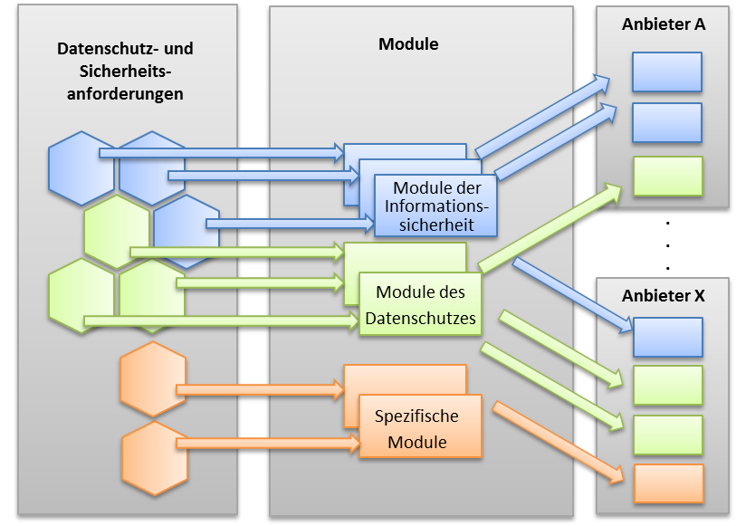
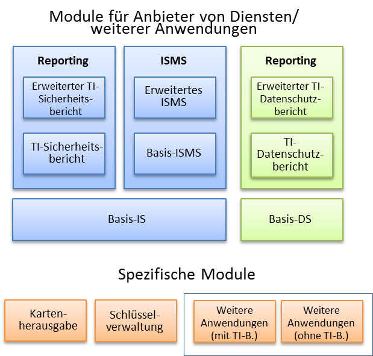
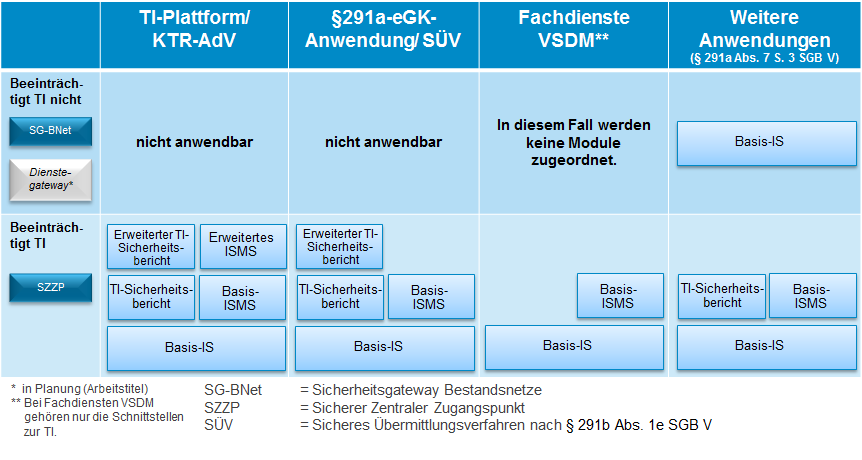
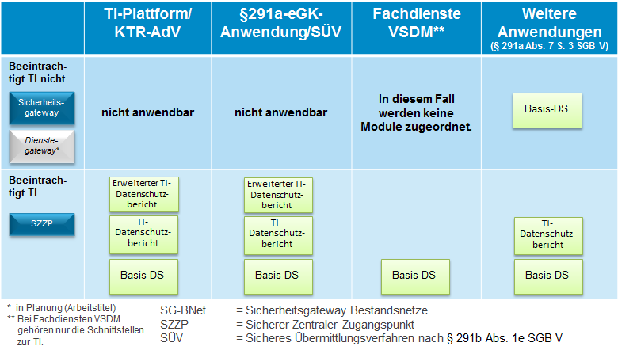
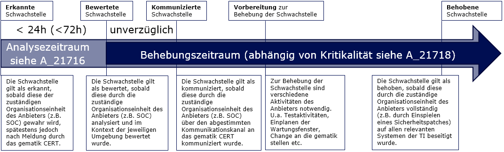
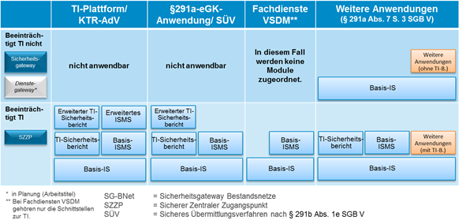
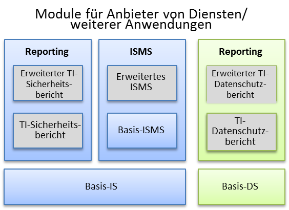

Elektronische Gesundheitskarte und Telematikinfrastruktur
Spezifikation Datenschutz- und Sicherheitsanforderungen der TI an Anbieter
| Version | 1.5.0 |
| Revision | 571802 |
| Stand | 06.02.2023 |
| Status | freigegeben |
| Klassifizierung | öffentlich |
| Referenzierung | gemSpec_DS_Anbieter |
Änderungen zur Vorversion
Anpassungen des vorliegenden Dokumentes im Vergleich zur Vorversion können Sie der nachfolgenden Tabelle entnehmen.
Dokumentenhistorie
| Version |
Stand |
Kap./ Seite |
Grund der Änderung, besondere Hinweise |
Bearbeitung |
|---|---|---|---|---|
| 0.9.0 | 18.09.17 | Initiale Erstellung | gematik | |
| 1.0.0 | 14.05.18 | freigegeben | gematik | |
| 1.0.1 | 05.06.18 | 7.2.1 | formale Anpassung | gematik |
| 1.1.0 | 18.12.18 | 4.1, S. 20 | Änderung gemäß Änderungsliste P17.1 | gematik |
| 1.2.0 | 22.06.20 | Anpassungen lt. Änderungsliste P21.3 | gematik | |
| 1.3.0 | 12.11.20 | Einarbeitung Scope-Themen zu R4.0.1 | gematik | |
| 1.3.1 | 02.09.21 | Umbenennung der Begriffe "aAdG-NetG" in "WANDA Basic", "aAdG" und "aAdG-NetG-TI" in"WANDA Smart" | gematik | |
| 1.4.0 | 31.01.22 | Einarbeitung ePA_Maintenance_21.5 | gematik | |
| 1.5.0 | 06.02.23 | Einarbeitung IDP_Maintenance_22.2 | gematik |
Das Dokument definiert übergreifende Sicherheits- und Datenschutzanforderungen für Anbieter von Diensten der Telematikinfrastruktur (TI), Anbieter von Fachdiensten VSDM gemäß § 291 Abs. 2b SGB V, Anbieter von Rechenzentrums-Consumern (RZ-Consumer) sowie Anbieter weiterer Anwendungen gemäß § 291a Abs. 7 Satz 3 SGB V.
Das Dokument richtet sich an Anbieter von Diensten der Telematikinfrastruktur, Anbieter von Fachdiensten VSDM gemäß § 291 Abs. 2b SGB V, Anbieter von Rechenzentrums-Consumern (RZ-Consumer) sowie Anbieter weiterer Anwendungen gemäß § 291a Abs. 7 Satz 3 SGB V.
Dieses Dokument enthält normative Festlegungen zur Telematikinfrastruktur des Deutschen Gesundheitswesens. Der Gültigkeitszeitraum der vorliegenden Version und deren Anwendung in Zulassungs- oder Abnahmeverfahren wird durch die gematik GmbH in gesonderten Dokumenten (z. B. Dokumentenlandkarte, Produkttypsteckbrief, Leistungsbeschreibung) festgelegt und bekannt gegeben.
Wichtiger Schutzrechts-/Patentrechtshinweis
Die nachfolgende Spezifikation ist von der gematik allein unter technischen Gesichtspunkten erstellt worden. Im Einzelfall kann nicht ausgeschlossen werden, dass die Implementierung der Spezifikation in technische Schutzrechte Dritter eingreift. Es ist allein Sache des Anbieters oder Herstellers, durch geeignete Maßnahmen dafür Sorge zu tragen, dass von ihm aufgrund der Spezifikation angebotene Produkte und/oder Leistungen nicht gegen Schutzrechte Dritter verstoßen und sich ggf. die erforderlichen Erlaubnisse/Lizenzen von den betroffenen Schutzrechtsinhabern einzuholen. Die gematik GmbH übernimmt insofern keinerlei Gewährleistungen.
Spezifische Datenschutz- und Sicherheitsanforderungen für einzelne Produkttypen sind in den jeweiligen Spezifikationen und Konzepten des Produkttyps festgelegt.
Übergreifende Anforderungen an die Verwendung kryptographischer Algorithmen in der Telematikinfrastruktur sind in [gemSpec_Krypt] festgelegt.
Dieses Dokument enthält keine Anforderungen an Hersteller von Produkten der Telematikinfrastruktur. Diese sind in [gemSpec_DS_Hersteller] festgelegt.
Anforderungen als Ausdruck normativer Festlegungen werden durch eine eindeutige ID in eckigen Klammern sowie die dem RFC 2119 [RFC2119] entsprechenden, in Großbuchstaben geschriebenen deutschen Schlüsselworte MUSS, DARF NICHT, SOLL, SOLL NICHT, KANN gekennzeichnet.
Sie werden im Dokument wie folgt dargestellt:
<AFO-ID> - <Titel der Afo>
Text / Beschreibung
[<=]
Dabei umfasst die Anforderung sämtliche innerhalb der Textmarken angeführten Inhalte.
Dieses Dokument enthält übergreifende Datenschutz- und Sicherheitsanforderungen an Anbieter von Diensten der TI, Anbieter von Fachdiensten VSDM gemäß § 291 Abs. 2b SGB V, Anbieter von Rechenzentrums-Consumern (RZ-Consumer) gemäß [gemKPT_Arch_TIP] sowie an Anbieter weiterer Anwendungen gemäß § 291a Abs. 7 S. 3 SGB V.
Der Begriff „Dienste der TI“ umfasst dabei Dienste der TI-Plattform, Dienste der gesetzlichen Anwendungen der eGK nach § 291a Abs. 2 und Abs. 3 SGB V sowie Dienste der sicheren Übermittlungsverfahren nach § 291b Abs. 1e SGB V.
Im Gegensatz zu den Diensten der TI fallen die Fachdienste VSDM nicht in den gesetzlichen Aufgabenbereich der gematik gemäß § 291b Abs. 1 SGB V. Die Fachdienste VSDM sind Fachdienste der Krankenkassen. Hieraus resultiert für die Fachdienste VSDM eine gesonderte Anforderungszuordnung und sie werden daher auch nicht unter dem Begriff „Dienste der TI“ subsummiert.
Ein RZ-Consumer ist ein in einem Rechenzentrum betriebener Produkttyp einer Fachanwendung der TI, der als Consumer mit der TI interagiert und dabei sowohl Anteile der TI-Plattform als auch Anteile der Fachanwendung enthält. Der Produkttyp KTR-AdV ist ein Beispiel eines RZ-Consumers [gemSysL_AdV].
Alle Anforderungen sind in Module unterteilt. Jede Anforderung ist dabei genau einem Modul zugeteilt. Diese Module werden anschließend Anbietern zugeordnet (siehe Abbildung 1). Ist ein Modul einem Anbieter zugeordnet, muss dieser alle Anforderungen des Moduls umsetzen.

Abbildung 1: Anforderungen, Module und Anbieter
Abbildung 2 zeigt die Module im Überblick; unterteilt in Module zur Informationssicherheit (blau), zum Datenschutz (grün) sowie spezifische Module (rot). Die Anforderungen der Module sind in den Kapiteln 3, 4 und 5 beschrieben.

Abbildung 2: Modulübersicht für Anbietermodule
Die Module zur Informationssicherheit (blau) und zum Datenschutz (grün) sind anbieterübergreifend, d. h. unabhängig von einer speziellen Rolle des Anbieters.
Darüber hinaus gibt es spezifische Module für Kartenherausgeber, Anbieter von Schlüsselverwaltungen sowie Anbieter weiterer Anwendungen nach § 291a Abs. 7 S. 3 SGB V (unterteilt in weitere Anwendungen mit möglicher TI-Beeinträchtigung und weitere Anwendungen, bei denen eine TI-Beeinträchtigung technisch ausgeschlossen ist). Diese Module enthalten Sicherheitsanforderungen, die nur von Anbietern in diesen Rollen zu erfüllen sind.
Im Folgenden bezeichnet der Begriff „weitere Anwendungen“ immer weitere Anwendungen nach § 291a Abs. 7 S. 3 SGB V.
In diesem Abschnitt werden die anbieterübergreifenden Module zur Informationssicherheit Anbietern von Diensten der TI, Anbietern der Fachdienste VSDM, Anbietern von Rechenzentrums-Consumern (RZ-Consumer) und Anbietern weiterer Anwendungen zugeordnet (Abbildung 3).
Bei den Fachdiensten VSDM und weiteren Anwendungen wird unterschieden, ob der Verlust der Sicherheit des Dienstes die Sicherheit oder den Datenschutz der TI beeinträchtigen könnte oder ob dies technisch ausgeschlossen ist. Dies ist abhängig vom technischen Anschlusstyp des Dienstes an die TI.
Die aktuell verfügbaren Anschlusstypen sind der Sichere Zentrale Zugangspunkt (SZZP) und das Sicherheitsgateway Bestandsnetze (SG-BNet). Beim Sicherheitsgateway Bestandsnetze kann eine Beeinträchtigung der TI technisch ausgeschlossen werden, da darüber keine Dienste der TI erreichbar sind. Beim Verlust der Sicherheit eines über einen SZZP an die TI angeschlossenen Dienstes hingegen ist eine Beeinträchtigung der TI technisch nicht ausgeschlossen.
Derzeit werden die Fachdienste VSDM mittels SZZP an die TI angeschlossen. Daher werden den Fachdiensten VSDM die Module der Zeile „Beeinträchtigt TI“ zugeordnet. Die Zuordnung der Module zu den Fachdiensten VSDM berücksichtigt die Anwendbarkeit des § 274 Abs. 1 SGB V (vgl. Anhang C).
Die gematik prüft, ob ein technischer Anschlusstyp zur Verfügung gestellt werden kann, über den die Fachdienste VSDM und die weiteren Anwendungen ein Zugriff auf Dienste der TI ermöglicht wird und der gleichzeitig die TI vor Angriffen schützt, um so Sicherheitsanforderungen auf Seiten des Anbieters derart entbehrlich zu machen, dass bestimmte Module zur Sicherheit für den Anbieter entfallen. In den Abbildungen ist dieser intendierte technische Anschlusstyp als „Dienstegateway“ aufgenommen, um das Ziel zu verdeutlichen, welche Module mit dem Dienstegateway im Gegensatz zum Anschluss mittels SZZP entfallen sollen.
Für Dienste der TI-Plattform, der § 291a-eGK-Anwendungen und der sicheren Übermittlungsverfahren sowie der KTR-AdV als RZ-Consumer ist die Zuordnung der Module unabhängig vom Anschlusstyp. Der Verlust der Sicherheit der Dienste der TI (selbst wenn sie nicht an das zentrale Netz der TI angeschlossen sind) und der KTR-AdV, ist sofort auch eine Beeinträchtigung der Sicherheit der TI, da diese Produkttypen selbst ein integraler Bestandteil der TI sind (daher „nicht anwendbar“ in der Abbildung). Zum Beispiel könnte bei einer kompromittierten CVC-Root-CA (als Dienst der TI-Plattform) CV-Schlüsselmaterial unautorisiert ausgestellt werden, das einen Zugriff auf medizinische Daten von eGKs ermöglicht.
Die Produkttypen der TI-Plattform sind in [gemKPT_Arch_TIP] festgelegt.

Abbildung 3: Zuordnung der Module der Informationssicherheit
Abbildung 4 zeigt die Zuordnung der anbieterübergreifenden Module zum Datenschutz.
Anbietern werden Module zum Datenschutz nur zugeordnet, falls personenbezogene Daten in ihren Diensten verarbeitet werden.
Die Anforderungen der gematik zum Datenschutz konkretisieren die bestehenden Vorschriften zum Datenschutz um TI-spezifische Vorgaben, die aus Sicht der gematik notwendig sind, ihren gesetzlichen Auftrag nach § 291b Abs. 1 SGB V zu erfüllen. Die Anforderungen der gematik ersetzen die bestehenden Vorschriften zum Datenschutz nicht. Diese sind weiterhin von den Anbietern in ihrer eigenen Verantwortung einzuhalten.

Abbildung 4: Zuordnung der Module zum Datenschutz
Neben den Anforderungen des Datenschutzes und der Informationssicherheit dieses Dokumentes können sich für Anbieter weitere vertragliche Pflichten bzgl. Datenschutz und Informationssicherheit ergeben.
Hierzu gehören insbesondere Festlegungen, ob bei Zuordnung des Moduls „Erweitertes ISMS“ zusätzlich eine ISO27001-Zertifizierung gefordert wird.
Die Art des Nachweises der Anforderungen (Sicherheitsgutachten, Anbietererklärungen) ergibt sich aus dem Steckbrief des Zulassungs- bzw. Bestätigungsobjekts.
Dieses Kapitel beschreibt die Anforderungen der Module zur Informationssicherheit.
Die Anforderungen dieses Moduls fordern ein grundlegendes Informationssicherheitsmanagement. Vorgaben zu dessen konkreter Ausgestaltung erfolgen jedoch nicht.
GS-A_5551
Der Anbieter MUSS sicherstellen, dass sich die Betriebsumgebung/en der mittels der TI erreichbaren Dienste auf dem Gebiet eines Mitgliedstaates der EU bzw. des EWR befindet/befinden. <=
Hinweis: Anbietern von Fachdiensten VSDM wird die Anforderung GS-A_5551 aufgrund gesetzlicher Regelungen im SGB X nicht zugeordnet.
GS-A_5552
Der Anbieter MUSS die erforderlichen technischen Maßnahmen treffen, um die Anforderungen an die Sicherheit des Dienstes der TI, des RZ-Consumers, der Fachdienste VSDM bzw. der weiteren Anwendung im Hinblick auf die Schutzbedürftigkeit der dort verarbeiteten Daten zu gewährleisten. <=
GS-A_5553
Der Anbieter MUSS eine aktuelle und nachvollziehbare Dokumentation besitzen, in der der Schutzbedarf der Daten und die technischen Maßnahmen beschrieben werden, die getroffen wurden, um die Anforderungen an die Sicherheit des Dienstes der TI, des RZ-Consumers, der Fachdienste VSDM bzw. der weiteren Anwendung im Hinblick auf die Schutzbedürftigkeit der dort verarbeiteten Daten zu gewährleisten. Es sind zudem die Wirksamkeit der Sicherheitsmaßnahmen hinsichtlich des Schutzbedarfs der verarbeiteten Daten, die Restrisiken, ein Netzstrukturplan und die Maßnahmen zum Notfallmanagement zu dokumentierten. <=
GS-A_5554
Der Anbieter MUSS Prozesse zur Gewährleistung der Informationssicherheit aufbauen und kontinuierlich verbessern. <=
GS-A_4523-01
Der Anbieter MUSS im Rahmen des Informationssicherheitsmanagements eine Kommunikationsschnittstelle direkt der gematik mitteilen (übliche Kontaktinformationen wie Name eines Ansprechpartners, Stellvertreter, E-Mailadresse, Telefon, Fax, Anschrift, …). <=
GS-A_4524-01
Der Anbieter MUSS Änderungen an der Kommunikationsschnittstelle seines Informationssicherheitsmanagements der gematik unverzüglich direkt melden. <=
GS-A_5555
Der Anbieter MUSS erhebliche Störungen der Verfügbarkeit, Integrität, Authentizität und Vertraulichkeit, die zum Ausfall oder zur Beeinträchtigung der Sicherheit oder Funktionsfähigkeit des Dienstes der TI, des RZ-Consumers, der Fachdienste VSDM bzw. der weiteren Anwendung oder zum Ausfall oder zur Beeinträchtigung der Sicherheit oder Funktionsfähigkeit der Telematikinfrastruktur führen können oder bereits geführt haben, unverzüglich nach bekannt werden direkt der gematik melden. <=
GS-A_5556
Der Anbieter MUSS bei erheblichen Sicherheitsvorfällen oder Sicherheitsnotfällen, die Dienste der TI, RZ-Consumer, Fachdienste VSDM bzw. weitere Anwendungen betreffen, unverzüglich Maßnahmen zur Behebung des Vorfalls bzw. Notfalls umsetzen und den erfolgreichen Abschluss direkt an die gematik melden. <=
Hinweis: TI-ITSM-Teilnehmer melden die erfolgreiche Behebung eines Vorfalls gemäß den Vorgaben des Incident Managements (vgl. [gemRL_Betr_TI]).
Die Anforderungen dieses Moduls richten sich an die Ausgestaltung des ISMS beim Anbieter.
GS-A_4980-01
Der Anbieter MUSS für mindestens genau die Umgebungen, in denen die Dienste der TI, RZ-Consumer, der Fachdienste VSDM bzw. die weiteren Anwendungen betrieben werden, die internationale Norm ISO/IEC 27001 umsetzen. <=
Hinweis: Falls Anbieter direkt von der gematik beauftragt werden, wird zusätzlich eine ISO 27001-Zertifizierung mit einem Geltungsbereich, der den betriebenen Dienst der TI und die unterstützenden Systeme umfasst, gefordert.
GS-A_4981-01
Der Anbieter MUSS für mindestens genau die Umgebungen, in denen die Dienste der TI, RZ-Consumer, der Fachdienste VSDM bzw. die weiteren Anwendungen betrieben werden, zu allen gemäß der Erklärung der Anwendbarkeit (engl. „Statement of Applicability“) anwendbaren Maßnahmen (engl. „controls“) der internationalen Norm ISO/IEC 27001 ergreifen und die dort angegebenen Ziele (engl. „objectives“) erreichen. <=
GS-A_4982-01
Der Anbieter SOLL für mindestens genau die Umgebungen, in denen die Dienste der TI, RZ-Consumer, der Fachdienste VSDM bzw. die weiteren Anwendungen betrieben werden, beim Ergreifen der Maßnahmen (engl. „controls“) aus der internationalen Norm ISO/IEC 27002 die dort angegebene „Anleitung zur Umsetzung“ (engl. „implementation guidance“) und die dort angegebenen „Weiteren Informationen“ (engl. „other information“) befolgen. <=
Hinweis: Der Nachweis der Umsetzung der Anforderungen GS-A_4980-01, GS-A_4981-01 und GS-A_4982-01 kann durch Vorlage eines ISO27001-Zertifikats, welches den Geltungsbereich des Dienstes der TI, RZ-Consumers, der Fachdienste VSDM bzw. der weiteren Anwendung und der unterstützenden Systeme umfasst, erfolgen.
GS-A_4983-01
Der Anbieter SOLL für mindestens genau die Umgebungen, in denen die Dienste der TI, der RZ-Consumer, die Fachdienste VSDM bzw. die weiteren Anwendungen betrieben werden, bei der Umsetzung der internationalen Normen ISO/IEC 27001 und ISO/IEC 27002 die anwendbaren Anforderungen des BSI-Grundschutzkompendiums oder entsprechende Maßnahmen, die ein vergleichbares Sicherheitsniveau gewährleisten, umsetzen. <=
Hinweis: Der Anbieter muss aufgrund der Anforderung GS-A_4983-01 neben der nativen ISO 27001-Vorgehensweise nicht die Grundschutzvorgehensweise (BSI Standard 200-X) umsetzen. Eine zusätzliche Dokumentation ist aufgrund der Anforderung nicht erforderlich. Das BSI-Grundschutzkompendium beschreibt zu erreichende Sicherheitsanforderungen detaillierter als die Normen ISO 27001 und ISO 27002. Hierdurch soll eine gemeinsame Baseline anhand des BSI-Grundschutzkompendiums über das erforderliche Sicherheitsniveau und die Angemessenheit von Maßnahmen erlangt werden. Beispielsweise wird es einem Sicherheitsgutachter hierdurch erleichtert, die Angemessenheit von getroffenen Sicherheitsmaßnahmen besser einzuschätzen.
GS-A_3737-01
Der Anbieter MUSS die von ihm betriebenen Dienste der TI, RZ-Consumer, die Fachdienste VSDM bzw. weiteren Anwendungen in seine bestehende Sicherheitskonzeption einbinden oder ein betreiberspezifisches Sicherheitskonzept erstellen. Folgende Inhalte MÜSSEN vom Anbieter mindestens dokumentiert werden:
GS-A_3753-01
Der Anbieter MUSS die von ihm betriebenen Dienste der TI, RZ-Consumer, Fachdienste VSDM bzw. weiteren Anwendungen in seine bestehende Notfallkonzeption einbinden oder ein betreiberspezifisches Notfallkonzept erstellen. Folgende Inhalte MÜSSEN mindestens dokumentiert werden:
GS-A_3772-01
Der Anbieter SOLL bei der Erstellung seines Notfallkonzeptes den inhaltlichen Vorgaben des Dokuments BSI-Standard 100-4 „Notfallmanagement" [BSI 100-4] folgen. <=
GS-A_2328-01
Der Anbieter MUSS die Pflege und Fortschreibung der Sicherheits- und Notfallkonzepte für die von ihm betriebenen Dienste der TI, RZ-Consumer, Fachdienste VSDM bzw. weiteren Anwendungen durchführen. <=
GS-A_2329-01
Der Anbieter MUSS die Maßnahmen zur Sicherheit des Personals, der Organisation, der Infrastruktur und der eingesetzten Technologien entsprechend der erstellten Sicherheitskonzepte umsetzen und dokumentieren; wozu insbesondere die Implementierung und Einhaltung von organisatorischen und technischen Sicherheitsmaßnahmen und die Kommunikation sowie Durchführung von Sensibilisierungen für den Themenbereich „Informationssicherheit“ und Schulungen gehören. <=
GS-A_2345-01
Der Anbieter MUSS regelmäßige Reviews seiner bestehenden Sicherheitskonzepte inkl. der organisatorischen und technischen Sicherheitsmaßnahmen durchführen und die sich daraus ergebenen Verbesserungspotenziale umsetzen. <=
GS-A_2158-01
Der Anbieter MUSS sicherstellen, dass kryptographische Identitäten bzw. Schlüssel der Produktivumgebung der TI des Anbieters (Umgebungen mit Echtdaten) nicht in Testumgebungen und dass keine kryptographischen Identitäten bzw. Schlüssel aus Testumgebungen in der Produktivumgebung der TI genutzt werden. <=
GS-A_4984-01
Der Anbieter SOLL für die von ihm betriebenen Dienste der TI, RZ-Consumer, Fachdienste VSDM bzw. weiteren Anwendungen herstellerspezifische Sicherheitsvorgaben und -empfehlungen befolgen. <=
GS-A_2331-01
Der Anbieter MUSS Sicherheitsvorfälle („security incidents“) wirksam vorbeugen, diese aufdecken und unterbinden. <=
A_21716
Anbieter der TI MÜSSEN erkannte Software-Schwachstellen in den von Ihnen betriebenen Umgebungen der TI unverzüglich nach dem international etablierten Standard Common Vulnerability Scoring System (CVSS) in der jeweils aktuellen Fassung bewerten. Hierbei MUSS eine Reaktionszeit von <24h zur Bewertung der Schwachstellen an Werktagen sowie Bewertung der Schwachstellen an Wochenenden und Feiertagen von <72 h gewährleistet werden. <=
Hinweis: Von der gematik werden in Ausnahmefällen auch vom CVSS-Standard abweichende Bewertungssysteme zur Schwachstellenbewertung akzeptiert, sofern vom Anbieter Transparenz über die Bewertungskriterien hergestellt werden kann.
Der Gesamtprozess ist nachfolgend skizziert:

Abbildung 5 - Gesamtprozess Schwachstellenmanagement
A_21717
Anbieter der TI müssen der gematik gegenüber den CVS-Score sowie den Bewertungsvektor bei Bedarf und auf Nachfrage zur Verfügung stellen. <=
A_21718
Anbieter der TI SOLLEN bewertete Software-Schwachstellen innerhalb der folgenden maximalen Behebungszeit schließen.
| CVSS (bewertet) |
Behebungszeit |
|---|---|
| 10-9 | Schnellstmöglich, Individualvereinbarung |
| 8,9-7 | 1 Monat |
| 6,9-5 | quartalsweise |
| <5 | Regelpatchzyklus |
Hinweis: Die Behebungszeit beginnt nach Abschluss der Bewertungszeit (vgl. A_21716). Bei kritischen Schwachstellen (CVSS 10-9) oder sofern (z.B. aufgrund fehlender bereitgestellter Sicherheitspatches des Herstellers) eine Behebung innerhalb der definierten Fristen nicht erfolgen kann, ist eine Risikoanalyse in Abstimmung mit der gematik durchzuführen und mögliche alternative mitigierende Maßnahmen mit der gematik festzulegen.
A_21720
Anbieter der TI MÜSSEN das Coordinated Vulnerability Disclosure Programm der gematik aktiv durch ihre Beteiligung unterstützen. <=
Hinweis: Zur aktiven Beteiligung gehört neben der Entgegennahme, Analyse und schnellstmöglichen Beseitigung der Schwachstelle auch deren kommunikative Begleitung in Richtung der gematik, des Melders der Schwachstelle sowie in Richtung der Öffentlichkeit/Medien nach Schließung der Schwachstelle.
GS-A_2355-02
Der TI Anbieter MUSS kritische und hochbewertete Schwachstellen (CVSS ab 7) und erhebliche Bedrohungen unverzüglich nach Abschluss der Bewertung direkt an die gematik melden. <=
GS-A_2332-01
Der Anbieter MUSS die durch Notfälle aufgetretenen Schäden zeitnah durch entsprechende Maßnahmen seines Notfallmanagements korrigieren. <=
A_19174
Der Anbieter MUSS der gematik halbjährlich und bei Änderungen eine Übersicht über die Außenschnittstellen der Telematikinfrastruktur (IP Adresse bzw. FQDN), die aus dem Internet erreichbar sind, zur Verfügung zu stellen. <=
Außenschnittstellen der Telematikinfrastruktur in diesem Kontext sind alle Schnittstellen zum Internet, die direkt oder indirekt zur Bereitstellung des TI-Produktes notwendig sind (z.B. Beantragungsschnittstelle bei TSPs, Zertifikatsaustauschschnittstellen zwischen TSP und Personalisierer).
A_19175
Der Anbieter MUSS zustimmen, dass die gematik monatliche nicht-invasive Schwachstellenscans auf die Außenschnittstellen ihrer TI-Produkte durchführen darf. <=
Spezialisierung von Anforderungen des Moduls Basis-IS
Das Modul Basis-ISMS spezialisiert die Anforderungen GS-A_5552, GS-A_5553 und GS-A_5554 des Moduls Basis-IS. Werden die Anforderungen des Moduls Basis-ISMS umgesetzt, so auch diese Anforderungen des Moduls Basis-IS. Daher werden die Anforderungen GS-A_5552, GS-A_5553 und GS-A_5554 nicht den Anbietern zugeordnet, denen das Modul Basis-ISMS zugeordnet ist.
Von Anbietern, denen das Modul „Erweitertes ISMS“ zugeordnet ist, wird eine enge Zusammenarbeit mit dem CERT der gematik hinsichtlich der Erkennung, Analyse, Bewertung und dem Umgang von Sicherheitsvorfällen, Schwachstellen, Bedrohungen und Risiken erwartet. Die folgenden Anforderungen konkretisieren diese Notwendigkeit.
GS-A_5557
Der Anbieter MUSS im Rahmen eines Security Monitoring präventive Maßnahmen zur Erkennung und Analyse von Bedrohungen (z. B. über Korrelation und Auswertung von Log-Daten) durchführen. <=
Hinweis: Die durch den Anbieter auszuwertenden Informationen (z. B. Log-Daten der Kommunikationsverbindungen und anwendungsnaher Dienste) sind mit der gematik vor Betriebsaufnahme und im Rahmen der Einführung neuer Produkte und bei Änderungen an bestehenden Produkten abzustimmen. Die Anforderung GS-A_5557 gibt dabei bewusst nicht die einzusetzende Überwachungstechnologie bzw. Auswertungsmethode (z. B. IDS, SIEM) vor, sondern lässt den Anbietern die Freiheit bereits etablierte Technologien und Verfahren zu nutzen.
A_20714
Der Anbieter MUSS vor der Inbetriebnahme seines Produkts die technische Umsetzung des Security Monitorings, die zu überwachenden Systeme, die zu detektierenden Ereignisse auf den jeweiligen Systemen sowie die begleitenden organisatorischen Maßnahmen (z.B. Vorhaltefristen der detektierten Ereignisse) mit der gematik abstimmen, in einem Security Monitoring Konzept dokumentieren und umsetzen. <=
Hinweis: Zu überwachende Systeme sind einerseits insbesondere Firewalls, Application Level Gateways, Proxies und andere relevante technische Komponenten zur Absicherung von Übergängen zwischen der Telematikinfrastruktur und dem Internet, da sie neuralgische Punkte für die Sicherheit des Gesamtsystems darstellen und daher besonders geschützt werden müssen. Neben der Absicherung bedeutet dies insbesondere auch, dass die Schnittstellen mittels geeigneter Sensoren dahingehend überwacht werden, dass alle sicherheitsrelevanten Aktivitäten erfasst, kontinuierlich und echtzeitnah analysiert werden und erkannte Anomalien eskaliert werden.
Andererseits werden auch innerhalb der TI durch verschiedene Systeme besondere sicherheitsrelevante Aktionen durchgeführt. Zu diesen Aktionen gehören insbesondere Aktionen, bei denen Identitäten zugewiesen, entzogen oder in sonstiger Form verändert werden bzw. der Zugriff(-sversuch) auf besonders kritische Systembestandteile (z.B. Nutzung von privatem Schlüsselmaterial). Da eine unautorisierte Nutzung dieser Aktionen die Sicherheitsarchitektur in besonderem Maße gefährdet, müssen auch diese Aktionen kontinuierlich und echtzeitnah auf Anomalien hin überwacht werden.
A_20715
Der Anbieter MUSS regelmäßig und in Abstimmung mit der gematik (mindestens jährlich) die Umsetzung des Security Monitorings überprüfen, erkannte Verbesserungspotenziale etablieren und alle fachlichen Änderungen im Security Monitoring Konzept dokumentieren. <=
A_20716
Der Anbieter MUSS die in seinem Security Monitoring Konzept festgelegten Systeme hinsichtlich sicherheitsrelevanter Ereignisse kontinuierlich und echtzeitnah überwachen. <=
A_20717
Der Anbieter MUSS die Ergebnisse der Überwachung der in seinem Security Monitoring Konzept festgelegten Systeme an zentraler Stelle aggregieren, korrelieren und analysieren. <=
Hinweis: Die Analyse sollte Mithilfe eines SIEM Tools erfolgen, um die zu erwartenden großen Datenmengen automatisiert auswerten zu können.
A_20718
Der Anbieter MUSS auf detektierte Ereignisse (Alarme) unverzüglich reagieren und verifizieren, ob das Ereignis einen Sicherheitsvorfall darstellt. <=
Hinweis: Sicherheitsvorfälle sind gemäß GS-A_5555 - Unverzügliche Meldung von erheblichen Sicherheitsvorfällen und -notfällen zu melden und gemäß GS-A_5556 - Unverzügliche Behebung von erheblichen Sicherheitsvorfällen und -notfällen ist darauf zu reagieren.
A_20719
Der Anbieter MUSS für in seinem Security Monitoring Konzept festgelegten Systeme erkannte Anomalien technisch automatisiert über die von der gematik angebotene Schnittstelle an das TI SIEM System übermitteln. <=
A_20720
Der Anbieter MUSS der gematik auf Nachfrage Stichproben der Rohdaten für die in seinem Security Monitoring Konzept festgelegten Systeme automatisiert über die von der gematik angebotene Schnittstelle an das TI SIEM System übermitteln. <=
Hinweis: Die Übermittlung der Rohdaten dient der Verifikation und kontinuierlichen Verbesserung der bestehenden Schwell- und Messwerte.
A_21719
Der Anbieter MUSS für die in seinem Security Monitoring Konzept festgelegten Systeme aggregierte Informationen (Reports) technisch automatisiert über die von der gematik angebotene Schnittstelle an das TI SIEM System übermitteln. <=
GS-A_5558
Der Anbieter MUSS im Rahmen seines Schwachstellenmanagements mindestens monatliche Schwachstellenscans oder vergleichbare Maßnahmen zur Erkennung und Analyse von technischen Schwachstellen („vulnerabilities“) in den vom ihm betriebenen Dienst der TI bzw. RZ-Consumer durchführen. <=
Hinweis: Der Scan muss dabei alle Systeme umfassen, die zur Erbringung des TI-Dienstes benötigt werden. Ausgenommen hiervon sind nur Systeme, die offline betrieben werden, d.h. über keine Netzwerkanbindung verfügen. Authentisierte Schwachstellenscans meint in diesem Kontext, dass im Rahmen des Scans eine Anmeldung auf den zu scannenden Systemen stattfindet, um eine detaillierte Prüfung auf Softwareschwachstellen vornehmen zu können.
GS-A_5559-01
Der Anbieter MUSS der gematik die Ergebnisse von durchgeführten Schwachstellenscans oder der vergleichbaren Maßnahmen zur Erkennung und Analyse von technischen Schwachstellen monatlich in maschinenlesbarer Form zur Verfügung stellen. Dabei MÜSSEN mindestens die folgenden Inhalte enthalten sein: Scandatum, betroffene Umgebung (PU/RU/TU), betroffenes System (interner/externer Name), betroffenes System (IP-Adresse), betroffene Software, eindeutige Bezeichnung der Schwachstelle als CVE, Schweregrad der Schwachstelle als CVSS, Information zum Umgang mit der Schwachstelle. <=
Hinweis: Die Ergebnisse sollen vorzugsweise und soweit nicht anders besprochen im .csv Format an die gematik übermittelt werden.
GS-A_5560
Der Anbieter MUSS von der gematik übermittelte Meldungen zu Schwachstellen, Bedrohungen und Sicherheitsvorfällen annehmen, bewerten und die erforderlichen Maßnahmen mit der gematik abstimmen und umsetzen. <=
Hinweis: Sofern der Anbieter als Verpflichteter gemäß BSI-Gesetz Meldungen aus dem Lagezentrum des BSI erhält, wird die gematik diese Meldungen in der Regel nicht nochmals an die Anbieter zur Bewertung weiterleiten.
GS-A_5561
Der Anbieter MUSS der gematik einen Kontaktpunkt benennen, über den der Anbieter jederzeit sicherheitsrelevante Meldungen der gematik entgegennehmen kann, um eine unverzügliche Bearbeitung und Reaktion zu gewährleisten. <=
Hinweis: Sofern der Anbieter aufgrund gesetzlicher Anforderungen bereits eine Kontaktstelle zum BSI eingerichtet hat, kann der Anbieter diese auch für den Kontakt zur gematik nutzen.
GS-A_5562
Der Anbieter MUSS der gematik halbjährlich eine aktuelle Liste der zur Leistungserbringung von Diensten der TI bzw. RZ-Consumern verwendeten Hard- und Softwareprodukte sowie dem zugehörigen TI-Produkttyp übermitteln. <=
Hinweis: Die zur Verfügung gestellten Produktinformationen (z.B. Betriebssystem, eingesetzte Webserver, Datenbanken, Netzwerkkomponenten inkl. jeweils aktueller Version) dienen dazu, bei Schwachstellen und Sicherheitsvorfällen die Sicherheitslage der TI besser einschätzen zu können und mit Anbietern gezielt Maßnahmen zur Beseitigung der Schwachstellen zeitnah abstimmen zu können. Von Interesse sind hierbei insbesondere exponierte Systeme der TI und Spezialkomponenten, die für die Sicherheit der TI eine besondere Bedeutung haben.
Der Detailgrad und das zu verwendende Format der bereitzustellenden Liste der Produktinformationen sind vor Betriebsaufnahme und im Rahmen der Einführung neuer Produkte und bei Änderungen an bestehenden Produkten mit der gematik abzustimmen.
GS-A_5563
Der Anbieter MUSS sicherstellen, dass der gematik jährlich ein Sicherheitsbericht vorliegt (spätestens bis Ende März des Folgejahres), der mindestens folgende Inhalte hat:
GS-A_4530-01
Der Anbieter MUSS sich bei erheblichen Sicherheitsvorfällen und Notfällen mit der gematik hinsichtlich der Maßnahmen und deren Umsetzung abstimmen sowie deren erfolgreichen Abschluss direkt der gematik melden. <=
Hinweis: Die erforderliche Abstimmung ist durch den Change-Prozess gemäß [gemRL_Betr_TI] abgedeckt. Der Anbieter ist bei erheblichen Sicherheitsvorfällen und Notfällen angehalten, auch vor Abstimmung mit der gematik Sofortmaßnahmen zur Gefahrenabwehr einzuleiten.
GS-A_4532-01
Der Anbieter MUSS der gematik auf Anfrage die Umsetzung der Maßnahmen zur Behebung eines erheblichen Sicherheitsvorfalls oder Notfalls, z. B. in Form von zur Verfügung gestellten Dokumentationen, neuen Regelungen oder Prozessen sowie anhand von Auszügen aus der Konfiguration oder Logdaten, nachweisen. <=
Hinweis: Die Nachweise der Umsetzung der Maßnahmen in Folge eines erheblichen Sicherheitsvorfalls oder Notfalls kann über den Changemanagement-Prozess erfolgen. Sofern einzelne Nachweise aufgrund von Vertraulichkeitsbeschränkungen der gematik nicht übermittelt werden dürfen, kann die Anforderung auch durch Einsichtnahme der gematik vor Ort beim Anbieter im Rahmen eines anlassbezogenen Audits erfüllt werden.
GS-A_5324-01
Der Anbieter MUSS der gematik zusichern, dass der Anbieter das koordinierende Informationssicherheitsmanagementsystem (kISMS) der gematik unterstützt, indem auf Einladung der gematik ein Sicherheitsbeauftragter des Anbieters am Arbeitskreis Datenschutz und Informationssicherheit (AK DIS) teilnimmt, der sich im Rahmen seiner beruflichen Tätigkeit mit dem operativen Betrieb der vom Anbieter betriebenen Dienste befasst. <=
Hinweis: Sofern die Ziele des AK DIS durch die Teilnahme des Anbieters in anderen Gremien der gematik erreicht werden können, kann die gematik auf die Einladung des Anbieters zur Teilnahme am AK DIS verzichten.
GS-A_5624-01
Der Anbieter MUSS zusichern, dass die gematik oder ein von ihr zur Geheimhaltung verpflichteter Bevollmächtigter berechtigt sind,
Hinweis: Die gematik verfolgt mit der Durchführung der Audits das Ziel, gemeinsam mit den Anbietern in einem kooperativen Ansatz die Aufrechterhaltung des erforderlichen Sicherheitsniveaus nachzuweisen. Die gematik wird ein Regelaudit in der Regel drei Monate vor der Durchführung beim Anbieter ankündigen. Die Terminvereinbarung erfolgt im Einvernehmen mit dem Anbieter. Die gematik erstellt im Vorfeld einen Auditplan, aus dem der Umfang und die zu betrachtenden Themenbereiche festgelegt sind und stimmt den Auditplan mit dem Anbieter ab. Die gematik muss das Auditrecht nicht notwendigerweise jedes Jahr wahrnehmen.
GS-A_4526-01
Der Anbieter MUSS geeignete Nachweise zu den an die gematik übermittelten Sicherheitsmeldungen mindestens ein Jahr, nachdem diese bei der gematik eingegangen sind, vorhalten, um bei einem Informationssicherheitsaudit die Nachvollziehbarkeit der gemachten Meldungen zu ermöglichen. <=
Dieses Kapitel beschreibt die Anforderungen der Module zum Datenschutz.
GS-A_2076-01
Der Anbieter MUSS ein Datenschutzmanagement nach Baustein CON.2 des IT-Grundschutzkompendiums umsetzen <=
GS-A_5564
Der Anbieter MUSS der gematik eine Kommunikationsschnittstelle für Datenschutz (übliche Kontaktinformationen, wie Name eines Ansprechpartners, Stellvertreter, E-Mail-Adresse, Telefon, Fax, Anschrift, …) sowie die für den Anbieter zuständige datenschutzrechtliche Aufsichtsbehörde mitteilen. <=
Hinweis: Bei der in GS-A_5564 geforderten Kommunikationsschnittstelle muss es sich nicht notwendigerweise um den betrieblichen Datenschutzbeauftragten handeln.
GS-A_4479-01
Der Anbieter MUSS der gematik Änderungen der Kontaktinformationen seines Datenschutzmanagements unverzüglich mitteilen. <=
GS-A_4473-01
Der Anbieter MUSS jeden Datenschutzverstoß, der die Voraussetzungen für eine Benachrichtigung der Betroffenen nach Art. 34 DSGVO erfüllt und der sich auf die vom Anbieter betriebenen Dienste der TI, RZ-Consumer, Fachdienste VSDM bzw. die weiteren Anwendungen bezieht, unverzüglich nach bekannt werden der gematik zusammen mit folgenden Informationen melden:
Hinweis: Die vorstehende Anforderung knüpft an den Inhalt der DSGVO unabhängig von deren Anwendbarkeit an. Gleiches gilt für nachstehende Anforderungen, in denen auf Voraussetzungen der DSGVO verwiesen wird.
GS-A_5565
Der Anbieter MUSS im Fall von Datenschutzverstößen, die die Voraussetzungen für eine Benachrichtigung der Betroffenen nach Art. 34 DSGVO erfüllen und die sich auf die vom Anbieter betriebenen Dienste der TI, RZ-Consumer, Fachdienste VSDM bzw. die weiteren Anwendungen beziehen, unverzüglich Maßnahmen zur Behebung des Verstoßes umsetzen und den erfolgreichen Abschluss unverzüglich an die gematik melden. <=
Hinweis: TI-ITSM-Teilnehmer melden die erfolgreiche Behebung eines Verstoßes gemäß den Vorgaben des Incident Managements (vgl. [gemRL_Betr_TI]).
GS-A_5626
Falls ein Anbieter als Auftragsverarbeiter i. S. des Art. 4 Nr. 8 DSGVO tätig ist, MUSS dieser mit dem Auftraggeber als Verantwortlichen i. S. des Art. 4 Nr. 7 DSGVO verbindlich regeln, wie die Pflichten des Anbieters gegenüber der gematik, die sich aus den Sicherheits- und Datenschutzanforderungen der gematik ergeben, erfüllt werden. <=
Hinweis: Die Ausgestaltung der Regelung obliegt den Vertragsparteien der Auftragsverarbeitung.
Ist einem Anbieter der jährliche Datenschutzbericht des Moduls „Erweiterter TI-Datenschutzbericht“ (s. Afo GS-A_4468-02) zugeordnet, entfällt der in GS-A_4468-01 geforderte jährliche Datenschutzbericht (kurz).
GS-A_4468-01
Der Anbieter MUSS gewährleisten, dass der gematik jährlich (spätestens bis Ende März des Folgejahres) ein Jahresdatenschutzreport bzgl. der vom Anbieter angebotenen Dienste der TI, RZ-Consumer bzw. die weiteren Anwendungen vorliegt, der mindestens folgende Inhalte enthält:
Hinweis: Im jährlichen Datenschutzbericht der TI ist jeweils nur die Anzahl der Datenschutzverstöße, Anfragen bzw. Beschwerden zu nennen, nicht jedoch deren Inhalte.
Hinweis: Der KTR-AdV wird die Anforderung GS-A_4468-01 nicht zugeordnet, da in der aktuellen Ausbaustufe der TI in der KTR-AdV keine medizinischen Daten nach § 291a Abs. 3 SGB V verarbeitet werden. Beim Ausbau der TI ist zu prüfen, ob diese Bedingung dann weiterhin erfüllt ist und die Zuordnung der Anforderung GS-A_4468-01 erfolgen muss.
Neben dem Jahresdatenschutzreport ist im Falle gravierender Datenschutzverstöße die erfolgreiche Umsetzung der Maßnahmen zur Behebung des Verstoßes der gematik zu melden.
GS-A_4478-01
Der Anbieter MUSS der gematik auf Anfrage die Umsetzung der Maßnahmen zur Behebung eines Datenschutzverstoßes, der die Voraussetzungen für eine Benachrichtigung der Betroffenen nach Art. 34 DSGVO erfüllt und der sich auf die vom Anbieter betriebenen Dienste der TI, RZ-Consumer bzw. weitere Anwendungen bezieht, unter zur Verfügungsstellung einer Dokumentation mit den in Art. 33 Abs. 5 DSGVO geforderten Inhalten nachweisen.
Bei der KTR-AdV sind Nachweise zur Umsetzung von Maßnahmen nur insoweit zu machen, sofern sie nicht die Versichertenstammdaten nach § 291 SGB V betreffen. <=
GS-A_5324-02
Der Anbieter MUSS der gematik zusichern, dass der Anbieter das koordinierende Datenschutzmanagementsystem der gematik unterstützt, indem auf Einladung der gematik ein sachkundiger Ansprechpartner für Datenschutz des Anbieters am Arbeitskreis Datenschutz und Informationssicherheit (AK DIS) teilnimmt, der sich im Rahmen seiner beruflichen Tätigkeit mit dem operativen Betrieb der vom Anbieter betriebenen Dienste befasst. <=
Hinweis: Sofern die Ziele des AK DIS durch die Teilnahme des Anbieters in anderen Gremien der gematik erreicht werden können, kann die gematik auf die Einladung des Anbieters zur Teilnahme am AK DIS verzichten.
Ist einem Anbieter der jährliche Datenschutzbericht (GS-A_4468-02) zugeordnet, entfällt der in GS-A_4468-01 geforderte jährliche Datenschutzbericht (kurz) des Moduls „TI-Datenschutzbericht“.
GS-A_4468-02
Der Anbieter MUSS gewährleisten, dass der gematik jährlich (spätestens bis Ende März des Folgejahres) ein Jahresdatenschutzreport bzgl. der vom Anbieter angebotenen Dienste der TI bzw. RZ-Consumer vorliegt, der mindestens folgende Inhalte enthält:
Hinweis: Der KTR-AdV wird die Anforderung GS-A_4468-02 nicht zugeordnet, da in der aktuellen Ausbaustufe der TI in der KTR-AdV keine medizinischen Daten nach § 291a Abs. 3 SGB V verarbeitet werden. Beim Ausbau der TI ist zu prüfen, ob diese Bedingung dann weiterhin erfüllt ist und die Zuordnung der Anforderung GS-A_4468-02 erfolgen muss.
Die im Datenschutzreport genannten Auftragsverarbeiter sind jährlich vom Anbieter zu kontrollieren.
GS-A_2214-01
Falls der Anbieter Auftragsverarbeiter i.S. des Art. 4 Nr. 8 DSGVO beauftragt hat, MUSS er sich jährlich bei den beauftragten Auftragsverarbeitern von der Einhaltung der von den Auftragsverarbeitern getroffenen Maßnahmen überzeugen. <=
GS-A_5566
Der Anbieter MUSS im Falle von Unterbeauftragungen einzelner oder mehrerer Leistungen an Auftragsverarbeiter im Sinne des Art. 4 Nr. 8 DSGVO in den Unterbeauftragungsverträgen sicherstellen, dass die datenschutzrechtlichen Pflichten, die er zu beachten hat, im gleichen Maße von den Unterauftragnehmern erfüllt werden. Dies gilt gleichermaßen für weitere Unterbeauftragungsverhältnisse. <=
GS-A_5625
Der Anbieter MUSS zusichern, dass die gematik oder ein von ihr zur Geheimhaltung verpflichteter Bevollmächtigter berechtigt sind,
Hinweis: Die gematik verfolgt mit der Durchführung der Audits das Ziel, gemeinsam mit den Anbietern in einem kooperativen Ansatz die Aufrechterhaltung des erforderlichen Datenschutzniveaus nachzuweisen. Die gematik wird ein Regelaudit in der Regel drei Monate vor der Durchführung beim Anbieter ankündigen. Die Terminvereinbarung erfolgt im Einvernehmen mit dem Anbieter. Die gematik erstellt im Vorfeld einen Auditplan, aus dem der Umfang und die zu betrachtenden Themenbereiche festgelegt sind und stimmt den Auditplan mit dem Anbieter ab. Die gematik muss das Auditrecht nicht notwendigerweise jedes Jahr wahrnehmen.
Kapitel 3 und 4 enthalten anbieterübergreifende Module, die unabhängig von einer speziellen Rolle des Anbieters sind. Dieses Kapitel beschreibt die Module für Anbieter in spezifischen Rollen (vgl. spezifische Module (rot) in Abbildung 2). Die spezifischen Module werden Anbietern zusätzlich zu den anbieterübergreifenden Modulen zugeordnet.
Anbietern weiterer Anwendungen nach § 291a Abs. 7 S. 3 SGB V wird neben den anbieterübergreifenden Modulen der Informationssicherheit aus Kapitel 3 und des Datenschutzes aus Kapitel 4 auch das spezifische Modul „Weitere Anwendungen (ohne TI-Beeinträchtigung)“ bzw. das Modul „Weitere Anwendungen (mit TI-Beeinträchtigung)“ zugeordnet.
Das Modul „Weitere Anwendungen (ohne TI-Beeinträchtigung)“ ist für Anbieter relevant, bei denen technisch ausgeschlossen ist, dass der Verlust der Sicherheit ihrer Dienste die Sicherheit der TI beeinträchtigen können.
Das Modul „Weitere Anwendungen (mit TI-Beeinträchtigung)“ ist für Anbieter relevant, bei denen technisch nicht ausgeschlossen werden kann, dass sie die Sicherheit der TI beeinträchtigen könnten.
Die Richtlinie für weitere Anwendungen [gemRL_NvTIwA] unterscheidet die folgenden Anwendungskategorien für weitere Anwendungen:
Die WANDA Smart könnten die TI, aufgrund der Anbindungstechnik ihrer Dienste an die TI, beeinträchtigen. Bei den WANDA Basic ist eine Beeinträchtigung aufgrund der Anbindungstechnik an die TI technisch ausgeschlossen.
Anbieter von WANDA Smart sind daher „Anbieter weiterer Anwendungen mit Beeinträchtigung der TI“ und ihnen wird das Modul „Weitere Anwendungen (mit TI-Beeinträchtigung)“ zugeordnet. Anbieter von WANDA Basic sind „Anbieter weiterer Anwendungen ohne Beeinträchtigung der TI“, denen das Modul „Weitere Anwendungen (ohne TI-Beeinträchtigung)“ zugeordnet wird. Die Art der Anbindungstechnik für weitere Anwendungen an die TI wird von der gematik geprüft, mit dem Ziel, die Anbindung für weitere Anwendungen zu vereinfachen und die Sicherheitsanforderungen an die Anbieter zu reduzieren. Ziel ist es, dass auch den WANDA Smart das Modul „Weitere Anwendungen (ohne TI-Beeinträchtigung)“ zugeordnet werden kann.
Abbildung 6 zeigt alle Module der Informationssicherheit für weitere Anwendungen im Überblick.

Abbildung 6: Module für weitere Anwendungen
Die Anforderungen des spezifischen Moduls „Weitere Anwendungen (mit TI-Beeinträchtigung)“ gewährleisten eine zulässige Nutzung der Zentralen Dienste der TI durch die weiteren Anwendungen.
GS-A_5567
Ein Anbieter weiterer Anwendungen mit Beeinträchtigung der TI MUSS durch technisch-organisatorische Maßnahmen gewährleisten, dass ausschließlich die bestätigten Anwendungen bestimmte, festgelegte Zentrale Dienste der TI nutzen können. <=
Hinweis: Die Anforderung GS-A_5567 verbietet insbesondere auch eine reine Proxyfunktion im Sinne der Zurverfügungstellung der Schnittstellen zu den Diensten der TI-Plattform für Dienste, die nicht im Bestätigungs- bzw. Zulassungsumfang enthalten sind.
GS-A_5568
Der Anbieter weiterer Anwendungen mit Beeinträchtigung der TI MUSS durch technisch-organisatorische Maßnahmen gewährleisten, dass von Zentralen Diensten der TI zur Verfügung gestellte personenbezogene Daten weder unverändert noch geändert an nicht bestätigte oder nicht zugelassene Anwendungen weitergegeben werden. <=
GS-A_5569
Der Anbieter weiterer Anwendungen mit Beeinträchtigung der TI MUSS ggf. vorhandene Netzgrenzen derart sichern, dass außerhalb der Netzgrenzen nicht auf die TI zugegriffen werden kann. <=
GS-A_5570
Der Anbieter weiterer Anwendungen mit Beeinträchtigung der TI MUSS durch technisch-organisatorische Maßnahmen gewährleisten, dass ggf. an die Netzgrenzen des Bestätigungsumfangs gekoppelte Netze nicht von Nutzern der TI erreichbar sind. <=
GS-A_5571
Der Anbieter weiterer Anwendungen mit Beeinträchtigung der TI MUSS sicherstellen, dass in allen Netzsegmenten, die zur Verbindung der bestätigten oder zugelassenen Dienste mit dem Netzübergang zur Telematikinfrastruktur genutzt werden, Adressinformationen in IP-Paketen unverändert bleiben und es nicht möglich ist, IP-Pakete mit falschen Adressinformationen einzuschleusen. <=
Hinweis: Die Anforderung GS-A_5571 soll unter anderem IP-Spoofing verhindern.
GS-A_5572
Der Anbieter weiterer Anwendungen mit Beeinträchtigung der TI MUSS die ihm zugeordneten privaten asymmetrischen Schlüssel von Identitäten der Telematikinfrastruktur sicher speichern, so dass der Schlüssel während der Speicherung insbesondere nicht unautorisiert ausgelesen, unautorisiert verändert, unautorisiert ersetzt oder in anderer Weise unautorisiert benutzt werden kann. <=
GS-A_5573
Der Anbieter weiterer Anwendungen mit Beeinträchtigung der TI MUSS sicherstellen, dass die zum Komponentenzertifikat gehörende X.509-Identität des Dienstes der weiteren Anwendung die Vorgaben für X.509-Identitäten aus [gemSpec_Krypt] erfüllt. <=
GS-A_5574
Falls der Anbieter weiterer Anwendungen mit Beeinträchtigung der TI kryptographische Verfahren zum Schutz personenbezogener medizinischer Daten verwendet, MÜSSEN die Vorgaben aus [gemSpec_Krypt] eingehalten werden. <=
Die folgende Anforderung legt die Auditrechte der gematik für Anbieter weiterer Anwendungen mit Beeinträchtigung der TI fest. Sie entspricht inhaltlich den vertraglich festgelegten Auditrechten der gematik bei Anbietern von Diensten der TI.
GS-A_5575
Der Anbieter weiterer Anwendungen mit Beeinträchtigung der TI MUSS zusichern, dass die gematik oder ein von ihr zur Geheimhaltung verpflichteter Bevollmächtigter berechtigt sind,
Das spezifische Modul „Weitere Anwendungen (ohne TI-Beeinträchtigung)“ enthält folgende Anforderungen.
GS-A_5576
Der Anbieter weiterer Anwendungen ohne Beeinträchtigung der TI MUSS der Zulassungsstelle der gematik alle drei Jahre schriftlich mitteilen, dass in allen Anwendungen des Anbieters, die mittels der TI nutzbar sind, die Datenschutz- und Sicherheitsanforderungen des für die Anwendungen geltenden Produktsteckbriefes umgesetzt sind, die Vorschriften zum Datenschutz eingehalten werden und die Anforderungen an die Sicherheit der Anwendungen gewährleistet ist. <=
GS-A_5577
Der Anbieter weiterer Anwendungen ohne Beeinträchtigung der TI MUSS bei Änderungen am Objekt der Bestätigung, die der Zulassungsstelle der gematik angezeigt werden müssen, schriftlich mitteilen, dass durch die Änderungen weiterhin die Vorschriften zum Datenschutz eingehalten werden und die Anforderungen an die Sicherheit gewährleistet sind. <=
GS-A_5578
Falls der Anbieter weiterer Anwendungen ohne Beeinträchtigung der TI kryptographische Verfahren zum Schutz personenbezogener medizinischer Daten verwendet, MÜSSEN die Vorgaben aus [gemSpec_Krypt] eingehalten werden <=
Dieses Modul ist nur von Anbietern umzusetzen, die eine Schlüsselverwaltung anbieten.
Hinweis: Die betroffenen zentralen Produkttypen sind CVC-Root, gematik Root-CA, Intermediär VSDM, Namensdienst, TSP CVC, TSP X.509 nonQES (HBA, SMC-B, gSMC, FD, ZD), TSL-Dienst, Fachdienst KOM-LE.
GS-A_3078
Der Anbieter einer Schlüsselverwaltung innerhalb der TI MUSS in seinem Sicherheitskonzept notwendige Umstellungsprozesse bei Schwächung von kryptographischen Primitiven beschreiben und die Wirksamkeit der getroffenen Maßnahmen ist nachzuweisen (z.B. durch dokumentierte Notfallübungen, Ablaufprotokolle von abgewickelten Vorfällen). <=
GS-A_3125
Der Anbieter einer Schlüsselverwaltung MUSS in seinem Sicherheitskonzept dokumentieren, welcher Schlüssel in welcher Phase seines Lebenszyklus in welcher Systemkomponente transportiert wird. Es MUSS dabei sichergestellt werden, dass die Schlüssel nur an diejenigen Systemkomponenten verteilt werden, in denen ihr Aufenthalt vorgesehen ist und wo sie hinreichend geschützt sind. <=
GS-A_3130
Der Anbieter einer Schlüsselverwaltung MUSS in seinem Sicherheitskonzept dokumentieren, welcher Schlüssel in welcher Systemkomponente installiert wird. Es MUSS dabei sichergestellt werden, dass die Schlüssel in Systemkomponenten installiert werden, in denen ihr Aufenthalt vorgesehen ist und wo sie hinreichend geschützt sind. <=
GS-A_3139
Der Anbieter einer Schlüsselverwaltung MUSS sicherstellen, dass der Ableitungsprozess unumkehrbar und nicht vorhersehbar ist (die Kompromittierung eines abgeleiteten Schlüssels darf nicht den Ableitungsschlüssel oder andere abgeleitete Schlüssel kompromittieren). <=
GS-A_3141
Der Anbieter einer Schlüsselverwaltung MUSS im Falle des Einsatzes einer Schlüsselableitung (nach [ISO11770]) in seinem Sicherheitskonzept Maßnahmen für das Bekanntwerden von Schwächen des kryptographischen Verfahrens, welche die Grundlage der Schlüsselableitung ist, darlegen. <=
GS-A_3149
Der Anbieter einer Schlüsselverwaltung MUSS, falls er kryptographische Schlüssel archiviert, in seinem spezifischen Sicherheitskonzept beschreiben, welcher Schlüssel in welcher Phase in welcher Systemkomponente archiviert wird. Er MUSS sicherstellen, dass die Schlüssel nur an diejenigen Systemkomponenten verteilt werden, in denen ihr Aufenthalt vorgesehen ist und wo sie hinreichend geschützt sind. <=
Dieses Modul ist von Anbietern umzusetzen, die Karten herausgeben, die Produkttypen der TI-Plattform gemäß [gemKPT_Arch_TIP] sind. Dies sind die Karten eGK, HBA, SMC-B, gSMC-K und gSMC-KT.
Das Modul enthält alle Anforderungen aus [gemSpec_PINPUK_TI], [gemSpec_CAN_TI] für die sichere Verarbeitung von PIN/PUK und CAN. Diese Anforderungen werden einer Karte zugeordnet, falls diese eine PIN/PUK bzw. eine CAN besitzt.
Zudem hat der Kartenherausgeber oder, falls der Kartenherausgeber einen Dritten mit der Kartenpersonalisierung beauftragt, der Kartenpersonalisierer, für die Kartenpersonalisierung jene Module zur Informationssicherheit und, im Falle von personenbezogenen Kartendaten, jene Module zum Datenschutz umzusetzen, welche Produkttypen der TI-Plattform zugeordnet werden (vgl. Abbildung 3 und Abbildung 4).
Kartenherausgeber der gSMC-K sind die Hersteller der Konnektoren. Kartenherausgeber der gSMC-KT sind die Hersteller der Kartenterminals.
| Kürzel | Erläuterung |
|---|---|
| AdV |
Anwendungen des Versicherten |
| BIA |
Business Impact Analyse |
| DS |
Datenschutz |
| DSMS |
Datenschutzmanagementsystem |
| eGK |
elektronische Gesundheitskarte |
| EU |
Europäische Union |
| EWR |
Europäischer Wirtschaftsraum |
| IS |
Informationssicherheit |
| ISMS |
Informationssicherheitsmanagementsystem |
| kDSM |
koordinierendes Datenschutzmanagementsystem |
| KTR |
Kostenträger |
| RU |
Referenzumgebung |
| SGB |
Sozialgesetzbuch |
| SG-BNet |
Sicherheitsgateway Bestandsnetze |
| sÜv |
sicheres Übermittlungsverfahren |
| TI |
Telematikinfrastruktur |
| TU |
Testumgebung |
| WANDA Basic | Weitere Anwendungen für den Datenaustausch ohne Nutzung der TI oder derer kryptografischen Identitäten |
| WANDA Smart | Weitere Anwendungen für den Datenaustausch mit Nutzung der TI oder derer kryptografischen Identitäten für eigene Anwendungszwecke |
Die nachfolgende Tabelle enthält die Bezeichnung der in dem vorliegenden Dokument referenzierten Dokumente der gematik zur Telematikinfrastruktur. Der mit der vorliegenden Version korrelierende Entwicklungsstand dieser Konzepte und Spezifikationen wird pro Release in einer Dokumentenlandkarte definiert, Version und Stand der referenzierten Dokumente sind daher in der nachfolgenden Tabelle nicht aufgeführt. Deren zu diesem Dokument passende jeweils gültige Versionsnummer sind in der aktuellsten, von der gematik veröffentlichten Dokumentenlandkarte enthalten, in der die vorliegende Version aufgeführt wird.
| [Quelle] |
Herausgeber: Titel |
|---|---|
| [gemGlossar] |
gematik: Glossar der Telematikinfrastruktur |
| [gemKPT_Arch_TIP] |
gematik: Konzept Architektur der TI-Plattform |
| [gemRL_Betr_TI] |
gematik: Übergreifende Richtlinien zum Betrieb der TI |
| [gemRL_NvTIwA] |
gematik: Richtlinie – Nutzungsvoraussetzungen der TI für weitere Anwendungen des Gesundheitswesens sowie für die Gesundheitsforschung |
| [gemSpec_CAN_TI] |
gematik: Übergreifende Spezifikation CAN-Policy |
| [gemSpec_Hersteller_SI] |
gematik: Spezifikation Datenschutz- und Sicherheitsanforderungen an Hersteller |
| [gemSpec_Krypt] |
gematik: Verwendung kryptographischer Algorithmen in der Telematikinfrastruktur |
| [gemSpec_PINPUK_TI] |
gematik: Übergreifende Spezifikation PIN/PUK-Policy für Smartcards der Telematikinfrastruktur |
| [Quelle] |
Herausgeber (Erscheinungsdatum): Titel |
|---|---|
| [ISO11770] |
ISO/IEC 11770: 1996 Information technology – Security techniques – Key management Part 3: Mechanisms using asymmetric techniques |
| [RFC2119] |
RFC 2119 (März 1997): Key words for use in RFCs to Indicate Requirement Levels S. Bradner, https://datatracker.ietf.org/doc/html/rfc2119 |
Kapitel 3 und 4 ordnen die anbieterübergreifenden Module den Anbietern von Diensten der TI, Anbieter von Fachdiensten VSDM gemäß § 291 Abs. 2b SGB V, Anbietern von Rechenzentrums-Consumern (RZ-Consumer) sowie Anbietern weiterer Anwendungen gemäß § 291a Abs. 7 Satz 3 SGB V zu. In diesem Anhang wird dargestellt, nach welchem Schema die Module angeordnet sind und nach welchen Kriterien die Zuordnung der Module zu den Anbietern erfolgt.
Die Module zur Informationssicherheit und zum Datenschutz sind jeweils in Säulen angeordnet, die auf einem Basis-Modul („Basis-IS“ für Informationssicherheit, „Basis-DS“ für Datenschutz) aufsetzen.
Abbildung 7: Modulübersicht für Anbietermodule
Wird einem Anbieter ein Modul einer Säule zugeordnet, so gelten für ihn auch alle darunter liegenden Module der Säule. Wird einem Anbieter beispielsweise das Modul „Erweitertes ISMS“ zugeordnet, so gelten für ihn auch die darunter liegenden Module „Basis-ISMS“ und „Basis-IS“.
Für die Informationssicherheit gibt es eine Säule zur Etablierung eines Informationssicherheitsmanagementsystems und eine Säule zum Reporting an die gematik. Für den Datenschutz gibt es nur die Säule zum Reporting. Die Basis-Module enthalten jeweils die Minimalanforderungen zum Managementsystem und zu Meldepflichten.
Die Zuordnung der anbieterübergreifenden Module zur Informationssicherheit und des Datenschutzes in Abbildung 3 und Abbildung 4 erfolgt anhand der beiden folgenden Kriterien.
Es werden einem Anbieter alle anbieterübergreifenden Module zur Informationssicherheit und zum Datenschutz zugeordnet, die sich für ihn aus diesen beiden Kriterien ergeben.
Die Spezifikationshoheit der gematik unterscheidet sich bei Diensten der TI, der KTR-AdV als aktuell einzig spezifizierten RZ-Consumer, den Fachdiensten VSDM und weiteren Anwendungen nach § 291a Abs. 7 S.3 SGB V. Tabelle 2zeigt die Zuordnung der Module der Informationssicherheit und des Datenschutzes anhand dieses Kriteriums.
Tabelle 1: Modulzuordnung bzgl. der Spezifikationshoheit der gematik
| Anbieter | Module | ||
|---|---|---|---|
| gematik-Spezifikationshoheit (Dienste der TI) | zentrale TI-Plattform | Der Anbieter betreibt einen Dienst der zentralen TI-Plattform. Die Dienste der zentralen TI-Plattform werden von der gematik spezifiziert. |
Module Informationssicherheit: x Basis-IS x Basis-ISMS o Erweitertes ISMS x TI-Sicherheitsbericht x Erweiterter TI-Sicherheitsbericht |
| Module Datenschutz: x Basis-DS xTI-Datenschutzbericht x Erweiterter TI-Datenschutzbericht |
|||
| KTR-AdV | Der Anbieter betreibt die im Rechenzentrum zu betreibenden Anteile der KTR-AdV. Die KTR-AdV wird von der gematik spezifiziert. |
Module Informationssicherheit: x Basis-IS x Basis-ISMS o Erweitertes ISMS x TI-Sicherheitsbericht x Erweiterter TI-Sicherheitsbericht |
|
| Module Datenschutz: x Basis-DS xTI-Datenschutzbericht x Erweiterter TI-Datenschutzbericht |
|||
| eGK- Anwendung/ sÜv |
Der Anbieter betreibt einen Dienst einer eGK-Anwendung oder eines sicheren Übermittlungsverfahrens (sÜv). Dienste der eGK-Anwendungen und der sÜv werden von der gematik spezifiziert. |
Module Informationssicherheit: x Basis-IS x Basis-ISMS o Erweitertes ISMS x TI-Sicherheitsbericht x Erweiterter TI-Sicherheitsbericht |
|
| Module Datenschutz: x Basis-DS x TI-Datenschutzbericht x Erweiterter TI-Datenschutzbericht |
|||
| keine gematik-Spezifikationshoheit | Fachdienste VSDM | Der Anbieter betreibt einen Fachdienst VSDM gemäß § 291 Abs. 2b SGB V. Die Fachdienste VSDM und deren Spezifikation fallen nicht in den gesetzlichen Aufgabenbereich der gematik gemäß § 291b Abs. 1 SGB V. |
Module Informationssicherheit: o Basis-IS o Basis-ISMS o Erweitertes ISMS o TI-Sicherheitsbericht o Erweiterter TI-Sicherheitsbericht |
| Module Datenschutz: o Basis-DS o TI-Datenschutzbericht o Erweiterter TI-Datenschutzbericht |
|||
| weitere Anwendungen | Der Anbieter betreibt eine weitere Anwendung gemäß § 291a Abs. 7 Satz 3 SGB V. Weitere Anwendungen werden nicht von der gematik spezifiziert. |
Module Informationssicherheit: x Basis-IS o Basis-ISMS o Erweitertes ISMS o TI-Sicherheitsbericht o Erweiterter TI-Sicherheitsbericht |
|
| Module Datenschutz: x Basis-DS o TI-Datenschutzbericht o Erweiterter TI-Datenschutzbericht |
|||
Dienste der TI
Für Dienste der TI erstellt die gematik die funktionalen und technischen Vorgaben, legt den Inhalt und die Struktur der Datensätze für deren Bereitstellung und Nutzung fest, erstellt die Vorgaben für einen sicheren Betrieb der TI und überwacht ihre Umsetzung (§ 291b Abs. 1 SGB V).
Die gematik spezifiziert für Dienste der TI insbesondere die Maßnahmen, mit denen der Datenschutz und die Informationssicherheit gewährleistet werden. Die korrekte Umsetzung dieser Maßnahmen durch den Anbieter stellt sicher, dass in der TI die Vorschriften zum Datenschutz eingehalten und ein angemessenes Sicherheitsniveau in den Diensten der TI gewährleistet wird (vgl. § 291b Abs. 1 SGB V).
Anbietern von Diensten der TI werden sämtliche Module des Datenschutzes und, mit Ausnahme des Moduls „Erweitertes ISMS“, sämtliche Module der Informationssicherheit zugeordnet. Diese Module gewährleisten eine sichere Betriebsumgebung beim Anbieter.
KTR-AdV
Der im Rechenzentrum betriebene Anteil der KTR-AdV (AdV-Server) stellt die Funktionalitäten zur Verfügung, die eine AdV-App benötigt, um mit den Diensten der zentralen Telematikinfrastruktur und den Fachdiensten in der TI zu kommunizieren. Es handelt sich beim AdV-Server um einen Teil der TI. § 291b Absatz 1 Satz 1 Nummer 1 SGB V weist der gematik die Aufgabe zu, die funktionalen und technischen Vorgaben einschließlich eines Sicherheitskonzepts zu erstellen sowie nach § 291b Absatz 1 Satz 1 Nummer 3 auch Vorgaben für den sicheren Betrieb der TI zu erstellen und ihre Umsetzung zu überwachen. Um die Sicherheit der AdV konsistent über alle Daten bzw. Anwendungen hinweg zu gewährleisten, unterliegt die AdV einschließlich des AdV-Servers der betrieblichen Überprüfung der gematik.
Anbietern der KTR-AdV werden nach dem Kriterium der Spezifikationshoheit der gematik sämtliche Module des Datenschutzes und, mit Ausnahme des Moduls „Erweitertes ISMS“, sämtliche Module der Informationssicherheit zugeordnet.
Fachdienste VSDM
Die Fachdienste VSDM und deren Spezifikation fallen nicht in den gesetzlichen Aufgabenbereich der gematik gemäß § 291b Abs. 1 SGB V. Die gematik ist insbesondere nicht gesetzlich damit beauftragt – anders als bei den weiteren Anwendungen in § 291a Abs. 7 Satz 3 Nr. 2 SGB V – die Einhaltung der Vorschriften des Datenschutzes und ein angemessenes Sicherheitsniveau im Hinblick auf die Schutzbedürftigkeit der in den Fachdiensten VSDM verarbeiteten Daten zu gewährleisten. Die Fachdienste VSDM gehören nicht zur TI. Lediglich die Schnittstellen der Fachdienste VSDM sind Teil der TI.
Anbietern von Fachdiensten VSDM werden daher aufgrund des Kriteriums der „Spezifikationshoheit der gematik“ keine Module der Informationssicherheit oder des Datenschutzes zugeordnet.
Weitere Anwendungen
Weitere Anwendungen nach § 291a Abs. 7 Satz 3 SGB V werden nicht von der gematik spezifiziert. Der gesetzliche Auftrag der gematik beschränkt sich bzgl. der Spezifikation darauf, zu gewährleisten, dass nur weitere Anwendungen die TI nutzen, die die Vorschriften zum Datenschutz einhalten und ein angemessenes Sicherheitsniveau bzgl. ihrer Anwendung bieten (vgl. § 291a Abs. 7 Satz 3 Nr. 2 SGB V). Insbesondere spezifiziert die gematik keine Maßnahmen des Datenschutzes und der Informationssicherheit zum Schutz der Anwendungsdaten.
Es werden die Module „Basis-IS“ und „Basis-DS“ zugeordnet, um gemäß § 291a Abs. 7 Satz 3 Nr. 2 SGB V sicherzustellen, dass die Anbieter die Vorschriften zum Datenschutz und die Anforderungen der Informationssicherheit in ihrer weiteren Anwendung einhalten.
Dieses Kriterium unterscheidet die Anbieter danach, ob der Verlust der Sicherheit ihres Dienstes den Datenschutz oder die Sicherheit der TI beeinträchtigen kann. Tabelle 3 zeigt die Zuordnung der Module nach diesem Kriterium.
Es werden einem Anbieter nach diesem Kriterium keine Module zugeordnet, falls die Dienste des Anbieters so an die TI angeschlossen werden, dass eine Beeinträchtigung der Sicherheit der TI durch den Verlust der Sicherheit des Dienstes technisch ausgeschlossen ist.
Diensten der TI werden alle Module des Datenschutzes und der Informationssicherheit, mit Ausnahme des Moduls „Erweitertes ISMS“, zugeordnet, da der Verlust der Sicherheit eines Dienstes der TI die Sicherheit der TI per Definition beeinträchtigt.
Das Modul „Erweitertes ISMS“ ist von Anbietern der Dienste der zentralen TI-Plattform umzusetzen, da die Aufrechterhaltung von Sicherheit und Datenschutz bei diesen Diensten von besonderer Bedeutung für alle Teilnehmer der TI ist. Sie werden daher gemäß dem Modul „Erweitertes ISMS“ stärker bzgl. der Sicherheit kontrolliert.
Dem Anbieter einer KTR-AdV werden alle Module des Datenschutzes und der Informationssicherheit inkl. des Moduls „Erweitertes ISMS“ zugeordnet, da der Verlust der Sicherheit der KTR-AdV als integraler Bestandteil der TI die Sicherheit der TI per Definition beeinträchtigt. Zudem ergibt sich aufgrund der Erreichbarkeit des AdV-Servers (Teil der KTR-AdV) über das Internet zusammen mit der Möglichkeit, auf eine freigeschaltete eGK zuzugreifen, ein höheres Bedrohungspotential zur Beeinträchtigung der TI, so dass eine intensivere betriebliche Überprüfung erfolgt.
Kann für einen Dienst einer weiteren Anwendung eine Beeinträchtigung der TI nicht technisch ausgeschlossen werden, so werden auch dem Anbieter der weiteren Anwendung alle Module zugeordnet, mit Ausnahme der Module „Erweitertes ISMS“, „Erweiterter TI-Sicherheitsbericht“ und „Erweiterter TI-Datenschutzbericht“. Das Modul „Erweitertes ISMS“ wird nicht zugeordnet, da die Dienste der weiteren Anwendung, anders als Dienste der TI-Plattform, nicht von allen Teilnehmern der TI genutzt werden. Für weitere Anwendungen sind die Berichte der Module „TI-Sicherheitsbericht“ und „TI-Datenschutzbericht“ ausreichend zur Erfüllung des gesetzlichen Auftrags der gematik.
Bei den Fachdiensten VSDM wird – analog zu den Diensten der weiteren Anwendungen – bei der Zuordnung der Module berücksichtigt, ob eine Beeinträchtigung der Sicherheit und des Datenschutzes der TI bei Verlust der Sicherheit oder des Datenschutzes eines Fachdienstes VSDM technisch ausgeschlossen werden kann. Ist eine Beeinträchtigung der TI technisch ausgeschlossen, so werden keine Module zugeordnet. Ist eine Beeinträchtigung der TI nicht ausgeschlossen, werden die Module „Basis-IS“ und „Basis-ISMS“ sowie „Basis-DS“ zugeordnet. Zusammen mit der Prüfung der Fachdienste gemäß § 274 Abs. 1 SGB V (vgl. Anhang C) wird so der gesetzliche Auftrag der gematik gemäß § 291b Abs. 1 SGB V zur Gewährleistung eines sichereren Betriebs der TI und zur Sicherstellung der Einhaltung der Vorschriften zum Datenschutz in der TI umgesetzt.
In der derzeitigen Form des Anschlusses der Fachdienste VSDM an die TI ist eine Beeinträchtigung der Sicherheit und des Datenschutzes der TI bei Verlust der Sicherheit oder des Datenschutzes eines Fachdienstes VSDM technisch nicht ausgeschlossen.
Tabelle 2: Modulzuordnung bzgl. der Möglichkeit, die TI zu beeinträchtigen
| Grad der möglichen Beeinträchtigung der TI | Anbieter | Beschreibung | Module |
|---|---|---|---|
| keine Beeinträchtigung möglich | weitere Anwendungen | Die Sicherheit der Betriebsumgebung des Dienstes der weiteren Anwendung hat keinen Einfluss auf die Sicherheit der TI. | Module Informationssicherheit: o Basis-IS o Basis-ISMS o Erweitertes ISMS o TI-Sicherheitsbericht o Erweiterter TI-Sicherheitsbericht |
| Module Datenschutz: o Basis-DS o TI-Datenschutzbericht o Erweiterter TI-Datenschutzbericht |
|||
| Fachdienste VSDM | Die Sicherheit der Betriebsumgebung des Fachdienstes VSDM hat keinen Einfluss auf die Sicherheit der TI. Hinweis: In der derzeitigen Form des Anschlusses der Fachdienste VSDM an die TI ist dies nicht gegeben |
Module Informationssicherheit: o Basis-IS o Basis-ISMS o Erweitertes ISMS o TI-Sicherheitsbericht o Erweiterter TI-Sicherheitsbericht |
|
| Module Datenschutz: o Basis-DS o TI-Datenschutzbericht o Erweiterter TI-Datenschutzbericht |
|||
| Beeinträchtigung möglich | zentrale TI-Plattform | Die Sicherheit der Betriebsumgebung des Dienstes der TI hat einen Einfluss auf die Sicherheit der TI. Die Aufrechterhaltung von Informationssicherheit und Datenschutz bei Diensten der zentralen TI-Plattform ist von besonderer Bedeutung, da sie von allen Teilnehmern der TI genutzt werden. |
Module Informationssicherheit: x Basis-IS x Basis-ISMS x Erweitertes ISMS x TI-Sicherheitsbericht x Erweiterter TI-Sicherheitsbericht |
| Module Datenschutz: x Basis-DS x TI-Datenschutzbericht x Erweiterter TI-Datenschutzbericht |
|||
| KTR-AdV | Die Sicherheit der im Rechenzentrum betrieben Anteile der KTR-AdV hat einen Einfluss auf die Sicherheit der TI Die Aufrechterhaltung von Informationssicherheit und Datenschutz ist von besonderer Bedeutung, da auf freigeschaltete eGKs von Versicherten zugegriffen werden kann und damit missbräuchliche Zugriffe auf schützenswerte Daten der Versicherten möglich wären. |
Module Informationssicherheit: x Basis-IS x Basis-ISMS x Erweitertes ISMS x TI-Sicherheitsbericht x Erweiterter TI-Sicherheitsbericht |
|
| Module Datenschutz: x Basis-DS x TI-Datenschutzbericht x Erweiterter TI-Datenschutzbericht |
|||
| eGK-Anwendung/ sÜv | Die Sicherheit der Betriebsumgebung des Dienstes der TI hat einen Einfluss auf die Sicherheit der TI. | Module Informationssicherheit: x Basis-IS x Basis-ISMS o Erweitertes ISMS x TI-Sicherheitsbericht x Erweiterter TI-Sicherheitsbericht |
|
| Module Datenschutz: x Basis-DS x TI-Datenschutzbericht x Erweiterter TI-Datenschutzberich |
|||
| Fachdienste VSDM | Die Sicherheit der Betriebsumgebung des Fachdienstes VSDM hat einen Einfluss auf die Sicherheit der TI. | Module Informationssicherheit: x Basis-IS x Basis-ISMS o Erweitertes ISMS o TI-Sicherheitsbericht o Erweiterter TI-Sicherheitsbericht |
|
| Module Datenschutz: x Basis-DS o TI-Datenschutzbericht o Erweiterter TI-Datenschutzbericht |
|||
| weitere Anwendungen | Die Sicherheit der Betriebsumgebung des Dienstes der weiteren Anwendung hat einen Einfluss auf die Sicherheit der TI. | Module Informationssicherheit: x Basis-IS x Basis-ISMS o Erweitertes ISMS x TI-Sicherheitsbericht o Erweiterter TI-Sicherheitsbericht |
|
| Module Datenschutz: x Basis-DS x TI-Datenschutzbericht o Erweiterter TI-Datenschutzbericht |
Für ausgewählte Anbieter legt der § 274 Abs. 1 SGB V eine Aufsichtsbehörde und einen Prüfzyklus fest, nach dem die dort benannte Aufsichtsbehörde die Geschäfts-, Rechnungs- und Betriebsführung beim Anbieter prüft. Die Prüfung erstreckt sich auf den gesamten Geschäftsbetrieb des Anbieters und umfasst die Prüfung seiner Gesetzmäßigkeit und Wirtschaftlichkeit. Die Prüfung beinhaltet die Einhaltung der Vorschriften des Datenschutzes und die Maßnahmen zur Informationssicherheit.
Da die Prüfung des Datenschutzes und der Informationssicherheit inklusive Prüfzyklus gesetzlich geregelt ist, entfallen die Module zum Reporting und das Modul „Erweitertes ISMS“ für Anbieter der Fachdienste VSDM und Anbieter weiterer Anwendungen, für die der § 274 Abs. 1 SGB V anwendbar ist (siehe Abbildung 8).

Abbildung 8: Auswirkungen des § 274 SGB V auf die Modulzuordnung (grau = entfällt)